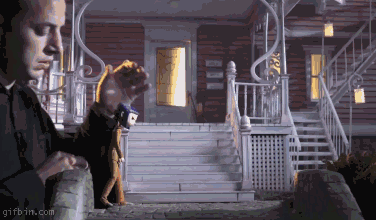

10-те етапа на развитие в кариерата на един уеб девелъпър
Кариерата на уеб девелъпъра е изпълнена с много препядствия. Имайки превид количеството знание и опит, които трябва да придобиете, очаквайте да преминете през много моменти на отчаяние, гордост, самоувереност, съмнение и много други. В този сайт ще разгледаме главните етапи на развитието на един уеб девелъпър, с помощта на gif-ове.!
Етап 1 – Нууб (Бунак)
Всички си спомняма с умиление първите стъпки в кариерате си – време, когато нямате абсолютно никаква представа какво се случва. Всеки код ви кара да се чувствате като риба на сухо. DOCTYPE? Моля? Какво по дяволите прави <div>? Първият етап е респектиращо страшен, но и вълнуващ. Колко проклети езика трябва да науча?!? Може би най-голямото ви предимство, обаче е, че вие нямате представа колко много има да учите. Научаването на HTML е равносилно на прохождането при човека.
Етап 2 – Първи стъпки
Въпреки че отнема известно време, вие ще направите първите си стъпки в света на коденето. Докато във първия етап си блъскате главата във стената с въпроса „Как и откъде да започнете?“, в втория вече започвате да изграждате своите умения. Все още синтаксисът на CSS ви прилича на нещо извънземно, но поне вече знаете как да промените кода си и да видите ефекта в уеб браузър. Не е ли вълнуващо!

Етап 3 – Пълна безпомощност
Представете си че сте в пещера и осветявате всеки тунел със своя фенер, надявайки се да намерите изход. Със всяка стъпка очавакте да видите лъч светлина, но за съжаление Кривата на обучение на уеб девелъпъра е много стръмна. Има още много време докато видите бленувания лъч светлина. Очаквайте да прекарате стотици часове на този етап, четейки технически книги по няколко пъти, отчайващо опитвайки се да разберете смисъла им. Ако ви обземе чувство на безпомощност, спомнете си, че всеки един девелъпър е минал през този етап. Не сте сами! Дерзайте и скоро ще стигнете до момента Ааааа.
Етап 4 – Моментът Ааааа
Моментът „Ааааа“ е едното то най-чудесните чувства на света: мигът в който ви просветне и си кажете „Така ставала тая простотия, начи.“ Най-често тези открития се случват късно през нощта, когато повечето хора сънуват вече 7-ми сън. Нещо което преди е звучало като на китайски вече започва да придобива смисъл. Това е етапът, когато всичките технологии и езици, които сте учили досега, започват да се навръзват.
Етап 5 – Крехкият код
Също като предишните етапи,“Крехкият“ етап е доста продължителен. Вече успешно можете да билдвате апликации и да постигате поставените си цели, но кодът ви е на една клиентска заявка от крашването. На този етап методите ви за десетки редове дълги и думате тестване още не е навлязла в речника ви. Поне билдвате неща вече!

Етап 6 – Плагиатство
Фазата на копирането е една от важните. Няма по-добър начин да се научите на правилните техники на кодене, от това да шпиониранете кода на мастърите – дори да се стигне и до пълно копиране. Не се чувствайте лошо, всяка артистична кариера минава през етап на плагиатство. За щастие, GitHub прави тази форма на тиха завист по-лесна от всякога. Разбира се копирането няма да ви научи на всичко, но е добро начало. Подражавайте на хората, които ви вдъхновяват и рано или късно ще развиете собствен стил на кодене.
Етап 7 – Напереност
Има още много да се развивате, но вашата увереност нараства адски бързо – може би прекалено бързо! Казват че през първите няколко години все още не знаете достатъчно, за да разбере колко малко всъщност знаете. Въздържайте се от това да станете прекалено наперен. В противен случай бъдещето ви „нинджа Аз“ ще си спомня със много срам за този етап от развитието си. Когато ви се прииска да напишете саркастичен коментар, като “научи се да кодиш, бе миндил“ , в Github, Reddit или StackOverflow, недейте. Не беше отдавна времето, когато и вие бяхте бунак. Всички сме в един гьол, просто на ралзични етапи.

Етап 8 – Когато коденето се превърне в изкуство
Въпреки че ще отнеме хиляди часове, един ден ще погледнете кода си и ще разберете, че сте създали произведение на изкуството. Вашият код е в система за контрол на версиите, добре замислен, минаващ всички тестове и лесен за четене. В един момент от кариерата ви, сиугрно сте се гордели със способността си да пишете потаен, объркващ код, но функционален код. Използването на всяка малка вратичка или особеност на няой език не ви прави узрял девелъпър. Ограничаването на някаква сложна логика до само един ред, само за да покажете колкот сте умни, също не ви прави по-добър девелъпър. Напротив, показва вашата напереност и липса на предпазливост или грижа към другаря девелъпър, който ще поддържа кода. Един код се превръща в изкуство, когато неговата четимост е толкова важна за вас, колкото и неговото изпълнение.
Етап 9 – Опитен
Когато кодът стане инстинкт, сте постигнали следващото стъпало във вашата кариера. Вече не мислите само във рамките на език или платформа. Вместо това, вие просто виждате един проблем и избирате правилните инструменти, от вашата кутия със инструменти за кодене и го решавате. Един опитен девелъпър разбира че самотният път не е правилният път. Всяка нова функция се обсъжда с останалите членове на екипа, пише се по бели дъски, измислят се тестове...всичко това преди и един ред код да бъде написан. Превърнали сте се в опитен, дълбокомислещ девелъпър, който е желан във всеки един екип. Поздравления!
Етап 10 – Rock Star
Малко стигат до това ниво. Това е върхът на сладоледа. Освен да вършите своята работа, вие често говорите по конференции, лидер сте на безброй open source проекти, а във свободното си време пишете компилатори. Другите ви мислят за рок звезда или нинджа, въпреки че вие мразите подобни етикети. Вие знаете най-добре от всички, колко още имате да учите!